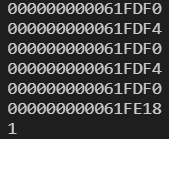

一维数组的创建和初始化
数组的创建
数组是一组相同类型元素的集合。 数组的创建方式
type_t arr_name [const_n];
//type_t 是指数组的元素类型
//const_n 是一个常量表达式，用来指定数组的大小
素组创建的实例
注：数组创建， [] 中要给一个常量才可以，不能使用变量。
//创建一个数组-存放整形-10个
int arr[5] = {1, 2, 3}; //不完全初始化，剩下的元素默认初始化为0
char arr2[5] = {'a', 'b'};
char arr3[5] = "ab";
char arr4[] = "abcdef";
// int n = 5;
// char ch[n];//err
printf("%d\n", sizeof(arr4)); //7 sizeof 计算变量、数组、类型的大小-单位是字节- 操作符
printf("%d\n", strlen(arr4)); //6 strlen 是求字符串长度的，只针对字符串求长度- 库函数-使用得引用头文件
数组的初始化
数组的初始化是指，在创建数组的同时给数组的内容一些合理初始值（初始化）。
char arr1[] = "abc";
char arr2[] = {'a', 'b', 'c'};
printf("%d\n", sizeof(arr1)); //4
printf("%d\n", sizeof(arr2)); //3
printf("%d\n", strlen(arr1)); //3
printf("%d\n", strlen(arr2)); //随机数，没有\0结束字符
一维数组的使用
对于数组的使用我们之前介绍了一个操作符： [] ，下标引用操作符。它其实就数组访问的操作符。
char arr[] = "abcdef"; //[a][b][c][d][e][f][\0]
printf("%c\n", arr[3]);//d
int i = 0;
for (i = 0; i < (int)strlen(arr); i++)
{
printf("%c ", arr[i]);
}
总结:
- 数组是使用下标来访问的，下标是从0开始。
- 数组的大小可以通过计算得到。
int sz = sizeof(arr) / sizeof(arr[0]);
一维数组在内存中的存储
int arr[10] = {0}; // 数组在内存中是连续存放的。
int i = 0;
for (i = 0; i < sizeof(arr) / sizeof(arr[0]); ++i)
{
printf("&arr[%d] = %p\n", i, &arr[i]); //10进制：0-9 16进制 0-9 a b c d e f
}
数组在内存中是连续存放的。

二维数组的创建和初始化
int arr[3][4] = {1, 2, 3, 4, 5};
int arr1[3][4] = {{1, 2, 3}, {4, 5}};
// int arr2[][] = {1, 2, 3, 4, 5};//err
// int arr3[][] = {{1, 2, 3}, {4, 5}};//err
// int arr4[2][] = {{1, 2, 3}, {4, 5}};//err
int arr5[][4] = {{1, 2, 3}, {4, 5}}; //行可以省略，列不可省略
//char ch[5][6];
二维数组的使用
int arr[3][4] = {0};
int i = 0;
//赋值
for (i = 0; i < 3; i++)
{
int j = 0;
for (j = 0; j < 4; j++)
{
arr[i][j] = i * 4 + j;
}
}
//使用
for (i = 0; i < 3; i++)
{
int j = 0;
for (j = 0; j < 4; j++)
{
printf("%2d ", arr[i][j]);
}
printf("\n");
}
二维数组在内存中的存储
int arr[3][4] = {{1, 2, 3}, {4, 5}};
int i = 0;
//存储
for (i = 0; i < 3; i++)
{
int j = 0;
for (j = 0; j < 4; j++)
{
printf("&arr[%d][%d] = %p\n", i, j, &arr[i][j]);
}
}
二维数组在内存中也是连续存储的。
数组作为函数参数
数组名是数组首元素的地址。（有两个例外）
- sizeof(数组名)，计算整个数组的大小，sizeof内部单独放一个数组名，数组名表示整个数组。
- &数组名，取出的是数组的地址。&数组名，数组名表示整个数组。
除此1,2两种情况之外，所有的数组名都表示数组首元素的地址。
int arr[10] = {1, 2, 3, 4, 5};
printf("%p\n", arr);
printf("%p\n", arr + 1);
printf("%p\n", &arr[0]);
printf("%p\n", &arr[0] + 1);
printf("%p\n", &arr); //数组的地址≠数组首元素的地址
printf("%p\n", &arr + 1); //意义不同，增加了5*4个字节，开始取的是1的地址，+1之后是取5后面的地址
printf("%d\n", *arr);

冒泡排序函数
比较相邻的元素。如果第一个比第二个大，就交换他们两个。
对每一对相邻元素作同样的工作，从开始第一对到结尾的最后一对。这步做完后，最后的元素会是最大的数。
针对所有的元素重复以上的步骤，除了最后一个。
持续每次对越来越少的元素重复上面的步骤，直到没有任何一对数字需要比较。

#include <stdio.h>
void bubble_sort(int arr[], int sz)//int *arr
{
int i = 0; // 确定冒泡排序的趟数
// int sz = sizeof(arr) / sizeof(arr[0]); //这样对吗？ 不对
for (i = 0; i < sz - 1; i++)
{
int flag = 1; //假设这一趟要排序的数据已经有序
//每一趟冒泡排序
int j = 0;
for (j = 0; j < sz - i - 1; j++)
{
if (arr[j] > arr[j + 1])
{
int tmp = arr[j];
arr[j] = arr[j + 1];
arr[j + 1] = tmp;
flag = 0; //本趟排序的数据其实不完全有序
}
}
if (flag == 1)
{
break;// if不能break,这个break是跳出外层循环
}
}
}
int main()
{
int arr[] = {3, 1, 7, 5, 8, 9, 0, 2, 4, 6}; //对arr进行排序，排成升序
int sz = sizeof(arr) / sizeof(arr[0]);
// bubble_sort(arr); //是否可以正常排序？
// arr是数组，我们对数组arr进行传参，实际上传递过去的是数组arr首元素的地址 &arr[0]
bubble_sort(arr,sz); // 冒泡排序函数
int i = 0;
for (i = 0; i < sizeof(arr) / sizeof(arr[0]); i++)
{
printf("%d ", arr[i]);
}
return 0;
}
练习
创建一个整形数组，完成数组的操作
- 实现函数init()初始化数组为全0
- 实现print()打印数组的每个元素
- 实现reverse()完成数组元素的逆置
void Init(int arr[], int sz)
{
int i = 0;
for (i = 0; i < sz; i++)
{
arr[i] = 0;
}
}
void Print(int arr[], int sz)
{
int i = 0;
for (i = 0; i < sz; i++)
{
printf("%d ", arr[i]);
}
printf("\n");
}
void Reverse(int arr[], int sz)
{
int left = 0;
int right = sz - 1;
while (left<right)
{
int tmp = arr[left];
arr[left] = arr[right];
arr[right] = tmp;
left++;
right--;
}
}
int main()
{
int arr[10] = { 1,2,3,4,5,6,7,8,9,10 };
int sz = sizeof(arr) / sizeof(arr[0]);
//Init(arr, sz);//把数组初始化0
Print(arr, sz);//打印 1 2 3 4 5 6 7 8 9 10
Reverse(arr, sz);
Print(arr, sz);//打印 10 9 8 7 6 5 4 3 2 1
return 0;
}
将数组A中的内容和数组B中的内容进行交换。（数组一样大）
int arr1[] = { 1, 3, 5, 7, 9 };//不能直接与tmp[5]={0}交换，因为arr1存储的是arr1首元素地址
int arr2[] = { 2, 4, 6, 8, 0 };
int tmp = 0;
int i = 0;
int sz = sizeof(arr1) / sizeof(arr1[0]);
for (i = 0; i < sz; i++)
{
tmp = arr1[i];
arr1[i] = arr2[i];
arr2[i] = tmp;
}